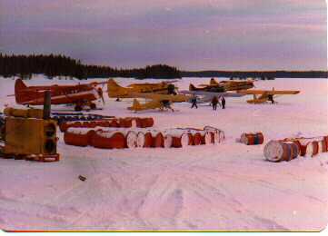
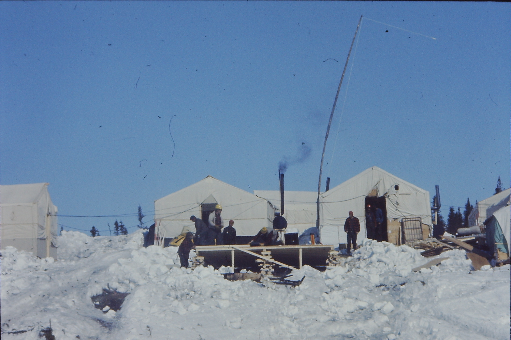
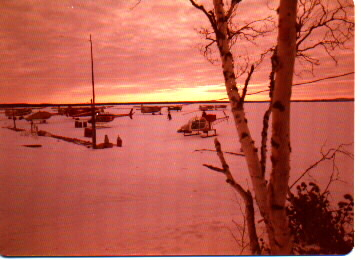
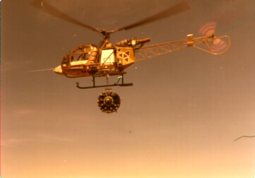
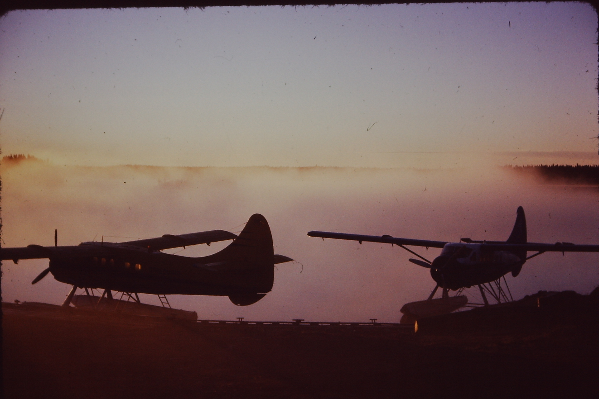
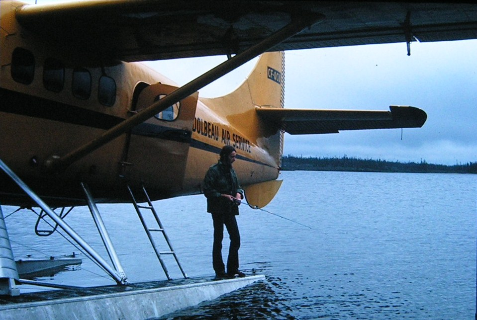

Un matin d'hiver au lac Cache à Chibougamau. Préparatifs pour le transport des barils :
essence, fuel, JP4... Nous en chargions 5 ou 6 dans les Otters, 3 dans les Beavers,
4 ou 5 dans les Norsemans, pour alimenter les camps isolés du Grand Nord.

Camp du lac Attila, quelques milles au sud de LG-2 — la principale centrale de
ce gigantesque complexe hydro-électrique de la Baie James. Toiles de tentes montées
sur des armatures de bois, planchers et murs en contreplaqué. Très confortables.
Une excellente cuisine. Une bonne étape pour les pilotes.

Matin de Pâques 1973 sur le lac Opinaca. Nous nous préparions à évacuer le site :
une grosse partie du camp avait brûlé la veille. Tous les appareils disponibles
avaient été affectés à l'évacuation des lieux.

Une Alouette emporte un moteur de Otter dans un petit lac, pour remplacer
celui d'un avion qui a dû faire un atterrissage forcé.

La base de Matagami sur la rivière Bell — le point de ravitaillement le plus important
pendant la construction de la route du nord qui menait aux sites des grands barrages.

Une courte halte sur une rivière nous permettait de ramener quelques beaux poissons
pour le souper.